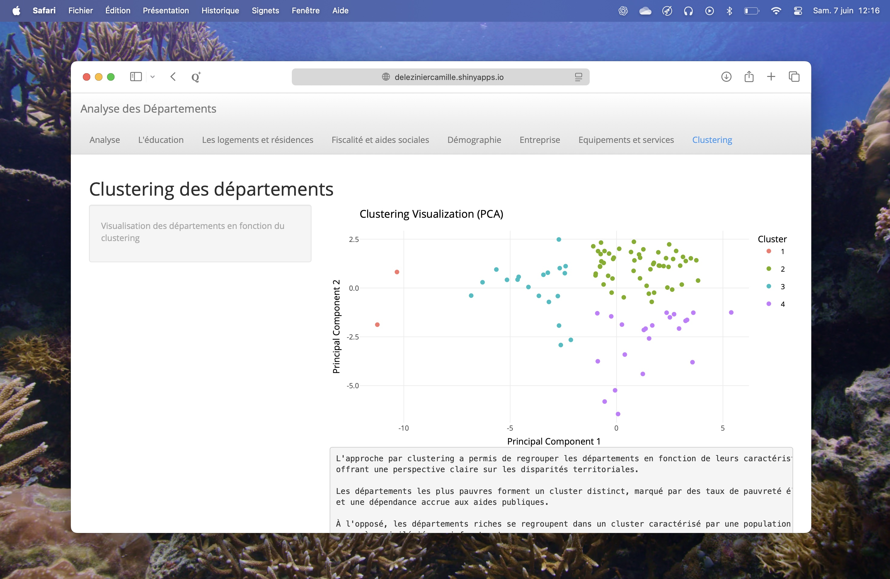

Nous avons été chargé de créer une application web avec Rshiny permettant de visualiser les résultats d'une analyse multivariée. Nous avions pour thème les données sur la pauvreté en France, et notre application devais permettre de visualiser les disparités entre départements, par exemple en fonction du taux de chômage, du taux de pauvreté, du nombre de bénéficiaires du RSA, etc.
Nous avons rencontré des difficultés lors de la création de l'application, notamment pour la mise en forme des graphiques et des tableaux. De plus, nous avons dû apprendre à utiliser Rshiny, ce qui a nécessité un temps d'adaptation.
Notre travail nous a valu la note de 15/20.
En plus d'avoir travaillé sur une grande partie de l'application, j'ai mis au point l'algorithme de clustering permettant de regrouper les départements en fonction de leurs caractéristiques. J'ai également appris à utiliser Rshiny, ce qui m'a permis de développer mes compétences en développement web avec R.